From CRUD to Event Sourcing
Why CRUD is the wrong approach for microservices
James Roper
@jroper
Agenda
- Failure test CRUD solutions
- Learn about Event Sourcing
- See why Event Sourcing is resilient
- Live coding!
Holiday Rentals
- Airbnb like application
- Asynchronous microservice architecture
- Kafka for messaging
- Reservation service uses CRUD persistence
Architecture
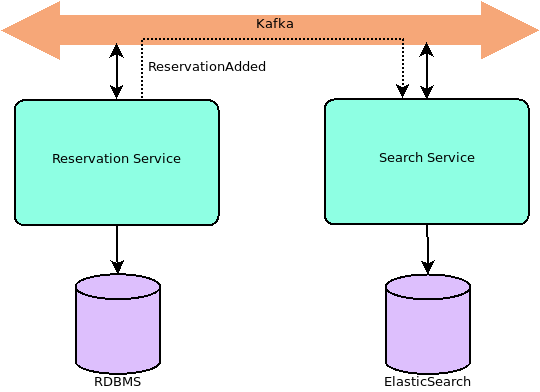Service implementation
- Basic approach:
- Update database
- and
- Publish to Kafka
Naive approach
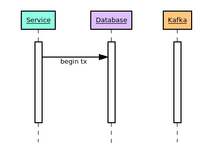
 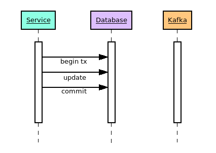
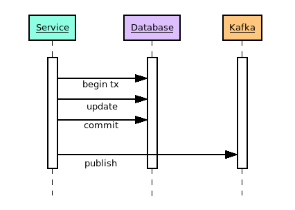
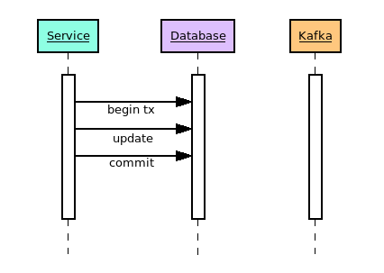
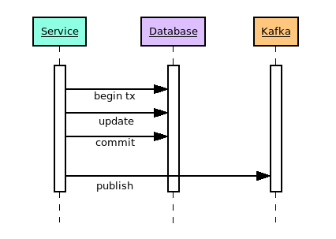

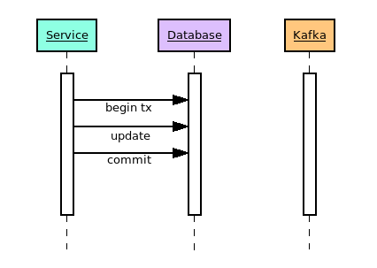
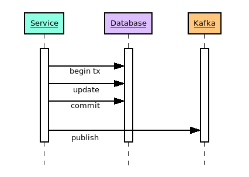
What if something goes wrong?
- Is this approach resilent?
- What if:
- The service goes down?
- The database goes down?
- Kafka goes down?
- The network goes down?
Naive approach
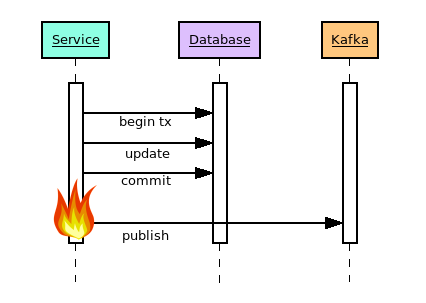
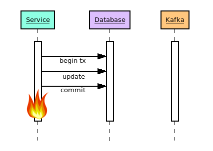
Another solution?
 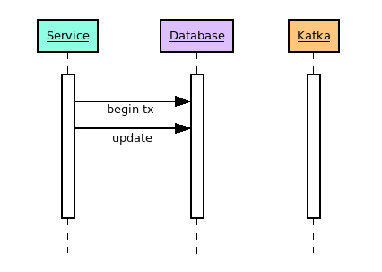
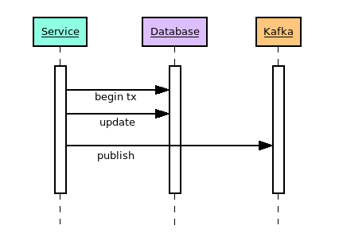
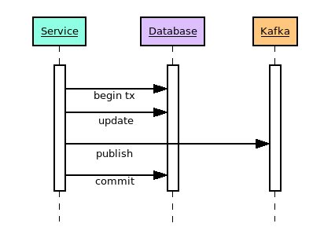
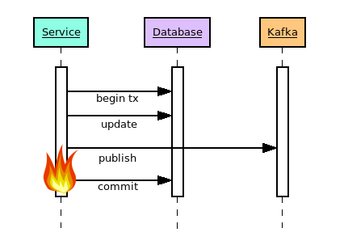
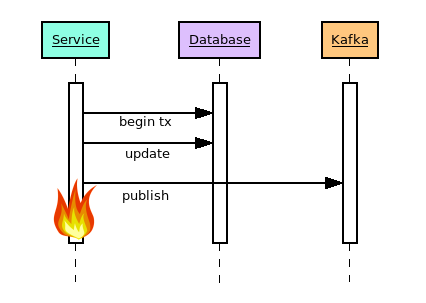
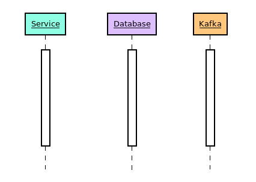
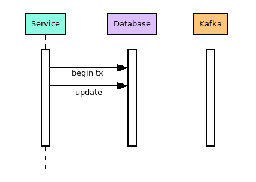
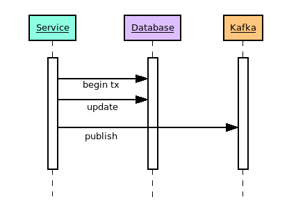
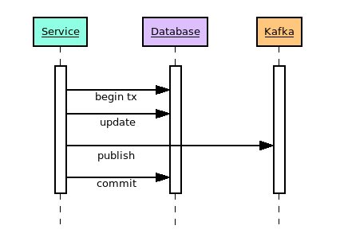
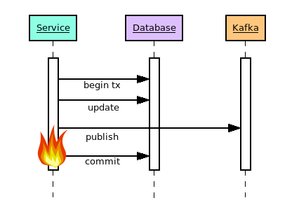
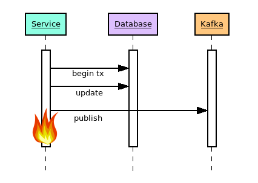
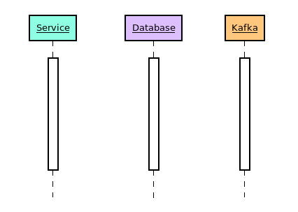
Two generals problem
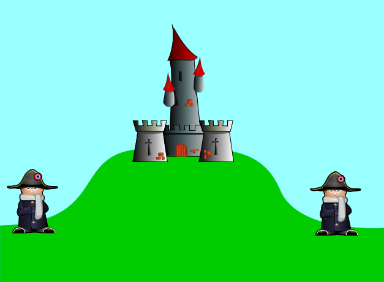Two generals problem
- It is proven to be unsolveable
Two-phase commit
- Can't we just use two-phase commit?
- No.
- Only reduces the window for failure to cause a problem
- The window is largest when failure is most likely
- Coordination comes at high cost
Too hard?
- Maybe it's all too hard
- Is inconsistency really that bad?
An easier way?
- We can't solve the 2 generals problem
- What if come up with a different plan of attack?
Event sourcing
- Don't store the current state
- Store the events that occurred
- Compute the state from the events
Event sourcing
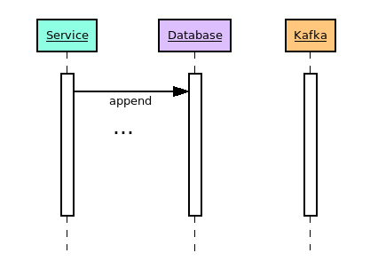
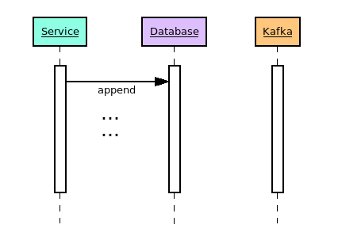
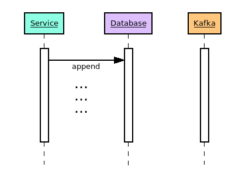
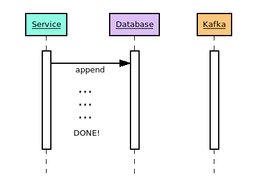

Event sourcing
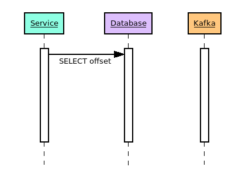
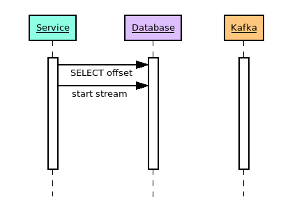
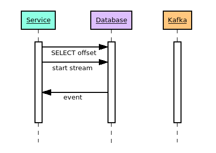
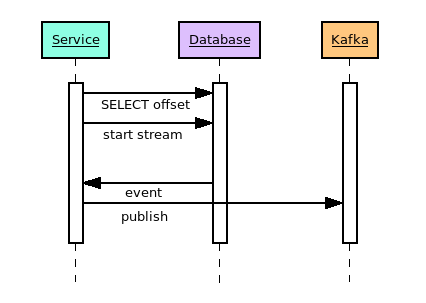
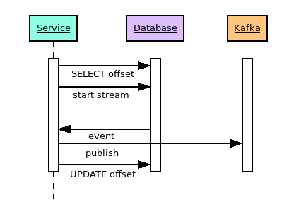

Event sourcing
- Advantages:
- Fact centric approach
- Self healing when problems occur
- Built in audit log
- Compute the state of the system at any time
Event sourcing
- Details:
- How is consistency addressed?
- Is replaying events expensive?
- How to query data?
Summary
- CRUD is not an ideal fit for distributed systems
- Event sourcing is an ideal fit for distributed systems
- Event sourcing brings a host of other advantages